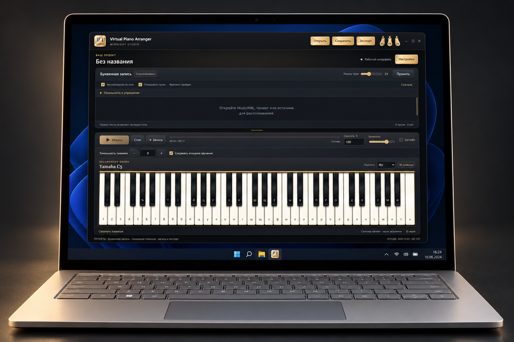

Windows · x64
Virtual Piano Arranger
Офлайн-пианино, буквенная запись и импорт выбранных партий MIDI. Распознавание нот экспериментальное.
Предварительная версия · 0.1.0-preview.1Перед запускомWindows x64; Python/Qt и отдельный runtime распознавания включены. EXE без цифровой подписи.


Как это работает
- Играть на пианино
- Работать с буквенной нотацией
- Собирать MIDI-партии
Первые шаги
Распакуйте весь portable, сверьте SHA-256, откройте VirtualPianoArranger.exe.